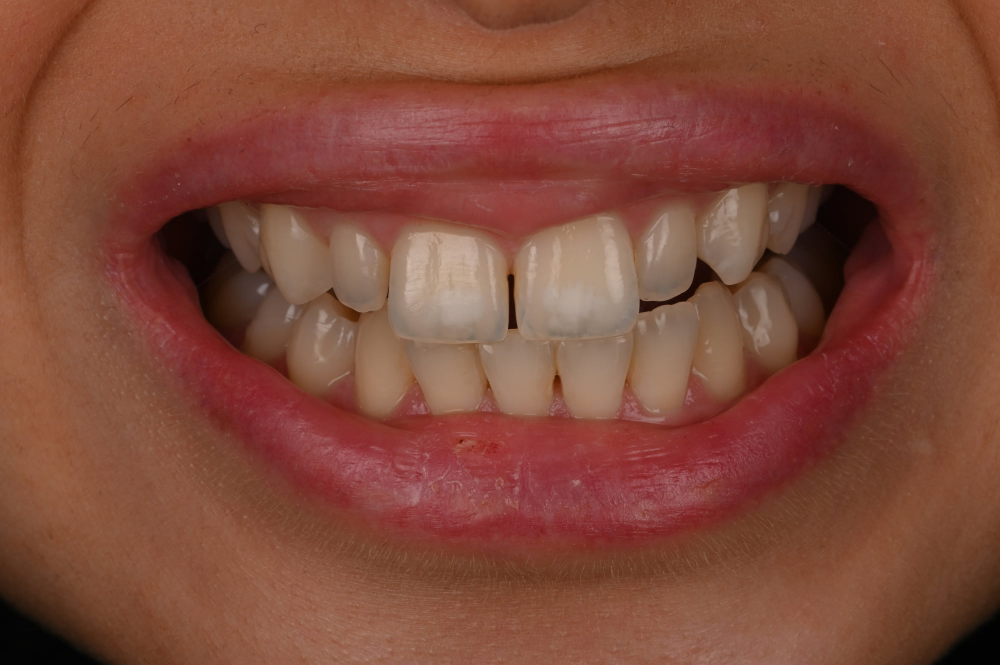
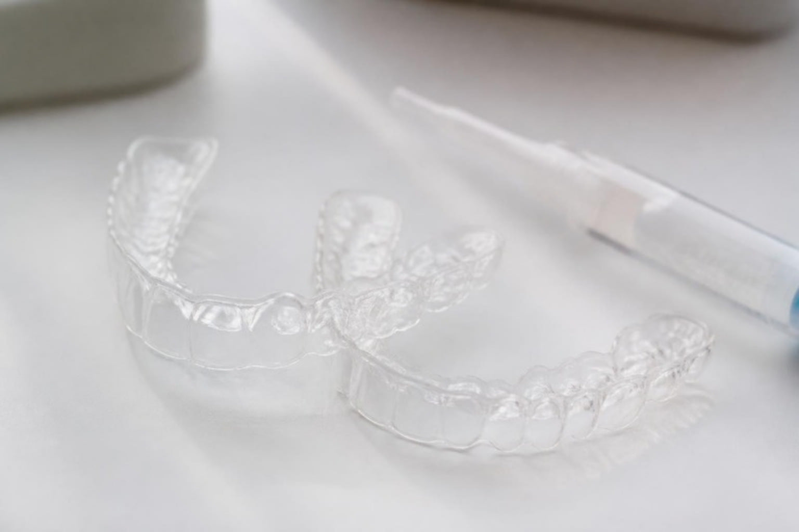
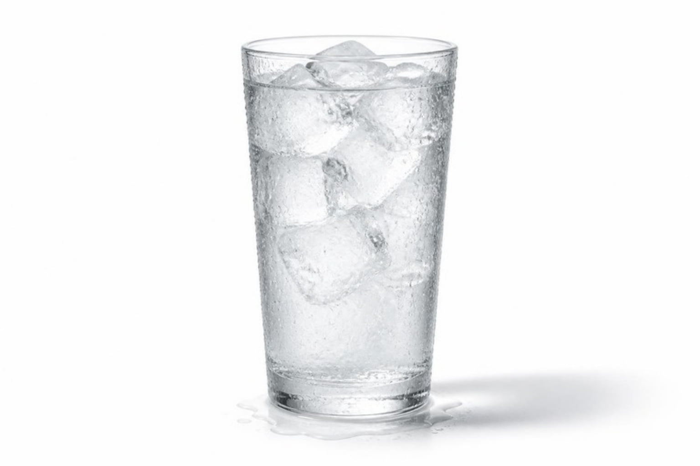

Accueil › Patient › Éclaircissement dentaire
L’acte
Éclaircissement dentaire
Gouttières à domicile
L’éclaircissement dentaire, souvent appelé blanchiment dentaire, est l’un des traitements les plus intéressants en termes de rapport entre impact esthétique et préservation des dents. Il n’est pas réservé aux dents « jaunes » : gagner en luminosité peut suffire à rendre un sourire plus frais et plus jeune. Le protocole est personnalisé selon la teinte de départ et l’objectif recherché.

Praticien hospitalier, Pitié-Salpêtrière · CMME, Sainte-Anne

1 / 5
Un traitement entièrement conservateur
L’éclaircissement dentaire, souvent appelé blanchiment dentaire, permet de gagner en luminosité sans retirer de tissu dentaire et peut constituer à lui seul un traitement esthétique complet.
Un sourire plus lumineux peut changer immédiatement la perception d’un visage
L’éclaircissement dentaire, souvent appelé blanchiment dentaire, est probablement l’un des traitements offrant le rapport le plus intéressant entre impact esthétique et préservation des dents.
Il n’est pas nécessaire d’avoir les dents « jaunes » pour bénéficier d’un éclaircissement. Avec le temps, la teinte naturelle perd souvent en luminosité. Éclaircir les dents permet de redonner de l’éclat au sourire, d’augmenter les contrastes et, très souvent, de lui donner une apparence plus fraîche et plus jeune.
Et dans de nombreux cas, l’éclaircissement constitue à lui seul tout le traitement esthétique nécessaire.
Un traitement 100 % conservateur
Aucune dent n’est taillée. Aucune matière dentaire n’est retirée. Aucune restauration n’est ajoutée.
C’est ce qui donne à l’éclaircissement une place particulière dans notre gradient thérapeutique : pour une intervention extrêmement limitée, la modification esthétique peut être très importante.
L’objectif n’est d’ailleurs pas nécessairement d’obtenir des dents artificiellement blanches. Nous déterminons ensemble le degré d’éclaircissement recherché, depuis un simple gain de luminosité jusqu’à une transformation beaucoup plus marquée du sourire.
2 / 5
L’éclaircissement ambulatoire
La technique que je privilégie : l’éclaircissement ambulatoire
Dans ma pratique, je privilégie principalement l’éclaircissement ambulatoire supervisé, réalisé à l’aide de gouttières personnalisées et de gel à base de peroxyde de carbamide.
Les gouttières sont portées à domicile, généralement la nuit, pendant une durée adaptée à la teinte initiale et au résultat recherché.
Cette technique permet un éclaircissement progressif, contrôlable et facilement adaptable.
Est-ce que le résultat est visible ?
Oui.
Lorsque l’indication est correctement posée et que le protocole est suivi, l’éclaircissement produit une modification visible de la teinte.
C’est précisément l’intérêt d’un traitement progressif : nous pouvons piloter l’éclaircissement jusqu’au niveau esthétique souhaité, dans les limites de la réponse naturelle des dents.

L’amplitude du résultat dépend principalement
- de la couleur initiale des dents ;
- de la nature de la coloration ;
- de la durée du traitement ;
- de la réponse individuelle ;
- et surtout du résultat que nous avons décidé de rechercher.
3 / 5
Les sensibilités
Et les sensibilités ?
Une sensibilité dentaire peut apparaître pendant l’éclaircissement.
Elle est transitoire et régresse après adaptation ou interruption du protocole.
L’intérêt d’un protocole suivi par le praticien est justement de pouvoir agir sur la concentration, la fréquence ou la durée des applications afin de conserver un traitement confortable.

4 / 5
Pendant le traitement
Faut-il arrêter le café, le thé ou le vin pendant l’éclaircissement ?
Les recommandations alimentaires doivent rester raisonnables et individualisées. Il n’est pas nécessaire de transformer la période d’éclaircissement en régime alimentaire très contraignant.
5 / 5
Dans un projet esthétique global
L’éclaircissement peut aussi s’intégrer à un projet esthétique plus large
Même s’il constitue très souvent une fin en soi, il peut également s’intégrer à une planification plus complète.
Par exemple, avant un composite bonding ou des facettes, éclaircir les dents naturelles peut permettre de partir d’une teinte plus lumineuse et parfois de limiter les artifices nécessaires pour obtenir le résultat final.
Mais dans beaucoup de situations, le parcours s’arrête simplement ici :
des dents plus lumineuses, un sourire plus éclatant, sans avoir modifié la structure des dents.
Questions fréquentes
Non. L’éclaircissement peut aussi être utilisé pour gagner en luminosité et en éclat sur des dents dont la teinte est déjà relativement claire.
« Blanchiment dentaire » est le terme le plus utilisé par le grand public. Le terme professionnel est plutôt éclaircissement dentaire.
Cela dépend de la teinte initiale, de la concentration utilisée et de l’objectif esthétique. Le protocole est donc personnalisé.
Oui, mais la teinte évolue progressivement avec le temps, notamment selon les habitudes alimentaires et le vieillissement naturel. L’avantage d’une technique par gouttières est qu’un entretien ponctuel peut être facilement réalisé lorsqu’il devient nécessaire.
Certaines personnes ressentent des sensibilités pendant le traitement. Elles sont transitoires et le protocole peut être adapté pour les limiter.
Gagner en luminosité sans modifier la structure des dents
Un bilan permet de comprendre la situation et les options possibles, avant tout engagement.
Prendre rendez-vousSources scientifiques
Les références ci-dessous soutiennent les principaux messages cliniques de cette page.
- [1] de Geus JL, Martins ACR, Reis A, Rezende M. At-home vs In-office Bleaching: An Updated Systematic Review and Meta-analysis. Oper Dent. 2025;50(4):E47–E69. — DOI : 10.2341/24-078-LIT PubMed
- Hardan L, Bourgi R, Flores-Ledesma A, et al. Is a White Diet Necessary for Tooth Bleaching Procedures? A Systematic Review and Meta-Analysis. Dent J (Basel). 2024;12(4):118. — DOI : 10.3390/dj12040118 PubMed
- Terra RMO, Favoreto MW, Morris T, Loguercio AD, Reis A. Effect of at-home bleaching agents and concentrations on tooth sensitivity: A systematic review and network meta-analysis. J Dent. 2025;160:105891. — DOI : 10.1016/j.jdent.2025.105891 PubMed